BEAUTIES of ORISSA
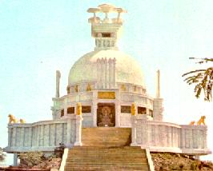
Surrounded by paddy fields with the Peace Pagoda (Shanti Stupa) built on the top in the early seventies, the hill brings to memory the horror of the great Kalinga war which was fought around here. It is here where Ashoka, the terrible (Chandashoka) was transformed into Ashoka, the compassionate (Dharmashoka) and championed the cause of Buddhism.
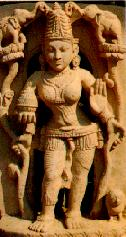
The three hills of Lalitgiri, Ratnagiri and Udaigiri (about 65 km from Cuttack) form a remarkable ancient Buddhist complex. The university of Pushpagiri was once a flourishing seat of learning. As early as the 7th century the Chinese traveller Hieun Tsang is said to have visited it. A number of Buddhist structures and images have been located in the Lalitgiri Hill. They were unearthed at the top of this hill from large brick mounds.
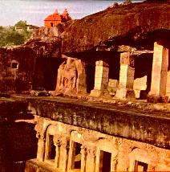
The twin hills of Khandagiri & Udayagiri, honey-combed with caves, built around 2nd century B.C. represent the great achievement of ancient Orissan architecture. Thirty-three rock-cut caves still stand on these two hills. The two-storeyed Rani Gumpha or Queen's caves are specially important for their art and architecture. They are the largest and have the most ornate carvings, painstakingly and delicately done, displaying the high standards of artistic achievements in eastern India.
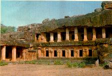
The thirteen years lithic record of king Kharavela found in Hathi Gumpha or Elephant Cave of Udayagiri is a magnificient specimen of Pali records so far found in India. It is more austere in architecture.
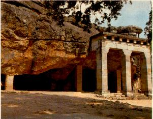
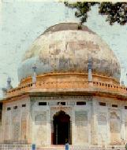
Situated in the center of the 13th century Barabati fort (in ruins) is Kadam Rasul, a Muslim shrine. It contains some holy relics of Prophet Muhammad brought from Mecca.
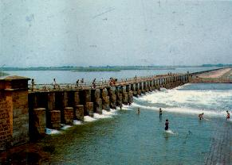
The Mahanadi river is the largest river of Orissa which is about 890 km long.
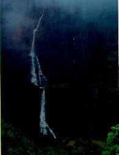
The Barehipani waterfall, with a 400-metre drop, is an attraction of Similipal in addition to its 2750 sq km national park (Tiger Reserve). The Joranda (150 metres) waterfall with a shorter drop is beautiful, reflecting multiple vibrant colors.
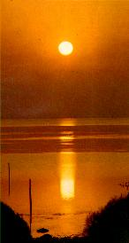
About 100 km from Bhubaneswar on the way to Berhampur is the huge Chilika lake, studded with small islands and separated from the Bay of Bengal by a sandy ridge. Here sunrise and sunset present memorable sights. It is also a birdwatchers' paradise where ducks, cranes, ospreys, golden plovers, sandpipers, flamingoes, gulls and many other birds, flock in winter.
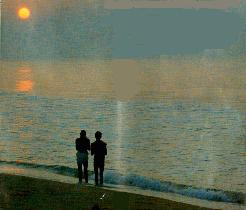
Puri, on the eastern coast of Orissa, is a magnificient beach resort and is one of the four great Hindu pilgrim centers. Golden sunshine, miles of yellow sand, blue waves and white surf. Under an umbrella, sipping green coconut water. This is Puri beach. It is a pleasure to swim here as the sea is shallow for almost a mile. Very near the beach, huge waves come rolling in - ideal for surf riding. Puri has a big fisherman (Nolia) community. Below is a picture of the Fisherfolk of Puri beach.
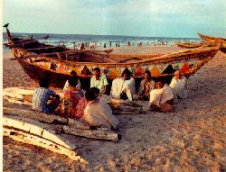
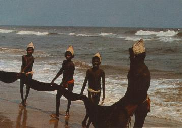
This quiet and charming seaside resort is near Berhampur. Clusters of palm and coconut trees, sand dunes shrouded with casuarina plantations, the sounds of the roaring sea to the subtle magnificience of the backwaters are what one finds here. The crumbling walls of the Jetty bear testimony to the past glory as a port humming with commercial activity in the days gone by.
Your suggestions are always welcome...
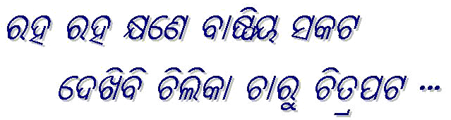

| This Page Has Been Accessed | Times Since |
|---|
was last updated on :